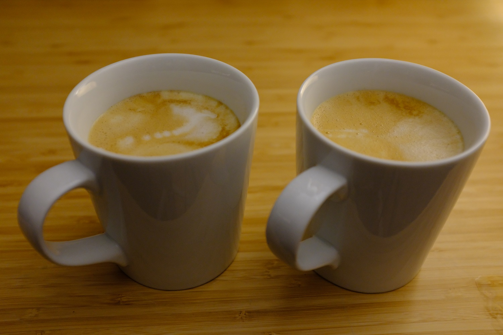
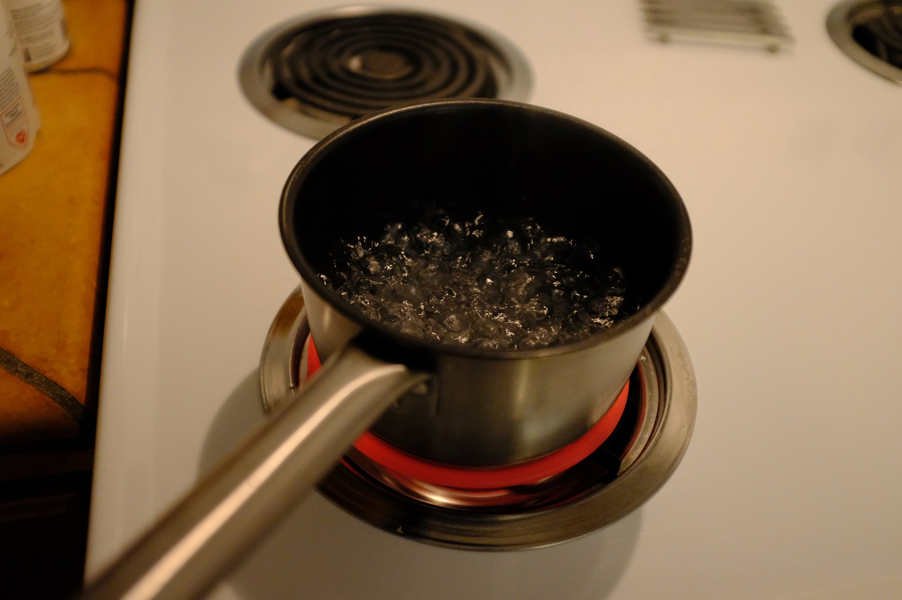

Decaf Oatmilk Lattes with a Moka Pot
Makes 2x ~16oz lattes.

Recommended ingredients:
Recommended Equipment:
Steps:
- Tip: If you just got your first moka pot or have just replaced the rubber gasket, you may want to do a few "dry runs" with no coffee, just water, to help "wear-in" the gasket and prevent strange odors/smells early on.
- Pre-boil the water in a separate pot. The idea here is that it reduces the amount of time the coffee grounds will spend in the hot moka pot, so they won't get burnt or "over-extracted".

- Set the grinder to Grind Setting 22, and grind ~14 teaspoons of coffee beans.
- Install the "cappuccino" wheel in the frother. Shake the oatmilk, and pour it into the frother, filling it to the "Capp Latte Max" line. Set the temperature to the "0" in 140'F marking. Don't start it yet.
- Pour the boiling water into the moka pot to the max fill line.
- Insert the basket, fill with coffee grounds. You may need to slightly compress the grounds down with the back of a spoon - not fully tamping it like you would with an espresso machine, much less pressure, just enough to fit the grounds. My theory is that by having slightly compressed grounds, it raises the resistance the steam/water has to overcome to make it through, increasing the pressure in the reservoir slightly. You certainly won't be getting the 9 bar of pressure required for "real" espresso, but it should be higher than if the grounds are completely loose, theoretically getting you a little more crema.
- Tighten the top of the moka pot, holding the bottom with a hand towel. You want a good seal, but don't want it so tight that you can't get it off afterward.
- Place the moka pot on the stove with the lid up - if using an electric range, I like to use the "medium" setting. I recommend placing it at the edge of the coil to ensure the moka pot's handle isn't directly over it where it might melt.
- Press start on the milk frother.
- Keep an eye on the moka pot, the coffee should start flowing out smoothly (may take a minute or two to start). When it begins to gurgle/burble, close the lid, and remove it from the range.
- Run the bottom part of the moka pot (the reservoir) under cold water for a few seconds. This cools it down and stops extraction, theoretically reducing sourness/bitterness/burntness.
- Pour the coffee into a mug or two - I don't have anything that could fit the full coffee + oatmilk, so I split it between two.
- The milk frother should finish around the same time as the coffee, though you might have to play with your timing a bit. I prefer to add the oatmilk to the coffee rather than the other way around. Since I split mine between two mugs, I like to fill one about halfway first, then switch to the other, fill it halfway, then switch back to the first, fill it all the way, then back to the second. The idea is that the consistency of the oat milk changes throughout the pour - the first part will be very foamy, toward the end it will be more liquid, so going back and forth like this gives a more even consistency for each mug.
- Enjoy!